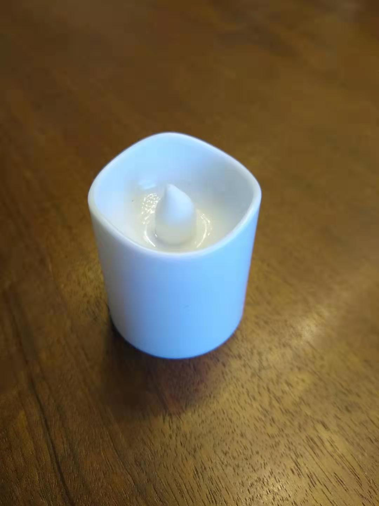

For out first project in Intro to Fabrication, we were asked to make a flashlight. The definition of a flashlight in this context was:
Something portable, which produces light.
I immediately set off for the Junk Shelf, which has a bunch of stuff that people have discarded for one reason or another, in the hopes that I could find something to inspire me (and also something I could use for free). Immediately, I found a tea light!! I thought this was super serendipitous, since if I could take it apart I already had something that could make light, which was useful because I didn't know the first thing about wiring.
